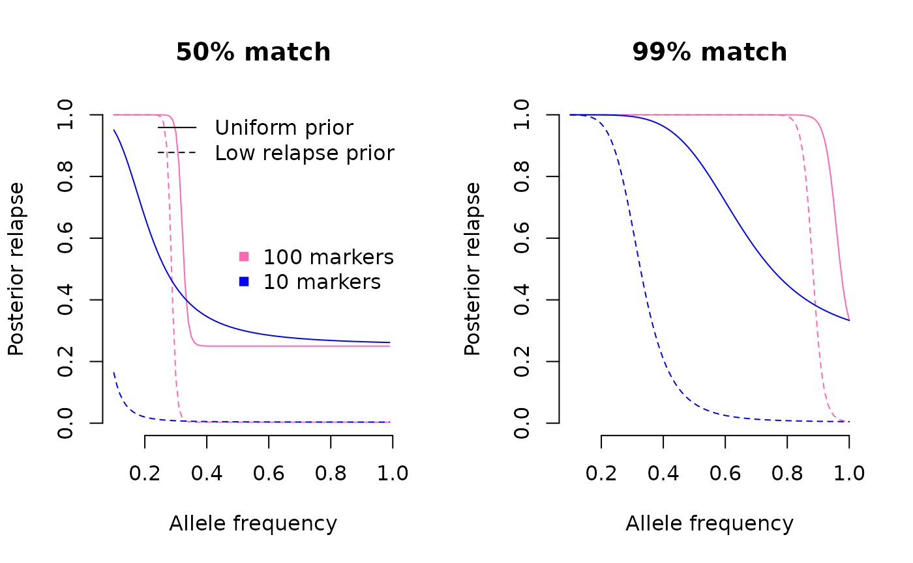
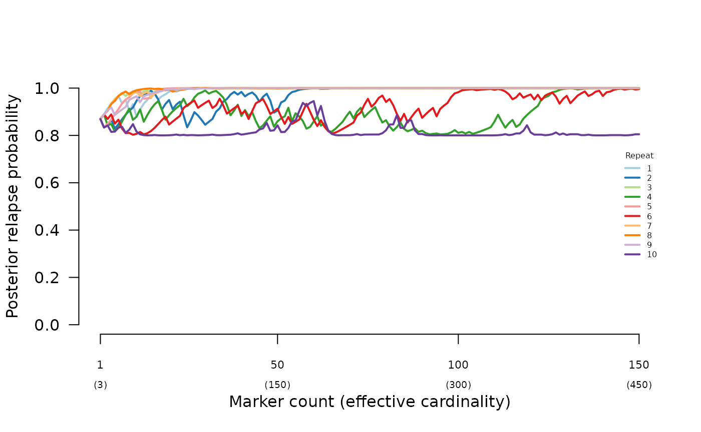
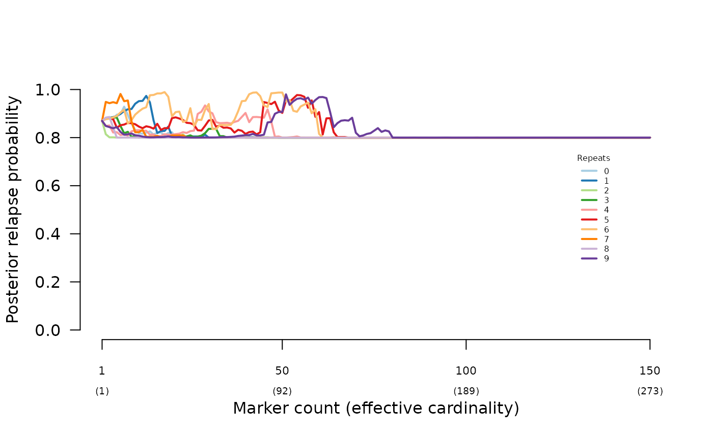

Summary
In a very limited setting (single recurrence, MOIs of one or two per episode, extreme and contrived data and allele frequencies), the following two questions are explored.
- What is the impact of the prior?
- Can the prior offset misspecification?
In summary: the prior does impact the posterior and can offset misspecification, but not always. More specifically,
- A high-relapse prior can generate a high-relapse posterior despite data consistent with reinfection.
- A high-relapse prior can rescue the relapse posterior when data are consistent with siblings but break the assumption that siblings draw their alleles from at most two parental gametes.
- A high-recrudescence prior cannot rescue the recrudescence posterior when data are consistent with clones with a single miss-match, e.g., due to genotyping error.
For data consistent with relapse, the results are more nuanced. In summary, the posterior transitions between probable relapse and probable reinfection with the increasing frequency of the allele that matches across episodes. When the Pv3Rs model is fit to only 10 markers, the transition is gradual, and a low-relapse prior can lower the relapse posterior when it is otherwise high. When the Pv3Rs model is fit to 100 markers, the transition is is abrupt. A low-relapse prior can generate a low-relapse posterior when it is otherwise high, but only within a narrow window of frequency (this window might differ for more realistic data).
Some contrived examples on which insight is based
Generate synthetic data, frequencies and priors
marker_count <- 100 # Number of markers
ms <- paste0("m", 1:marker_count) # Marker names
# Generate per-episode data
all_As <- sapply(ms, function(t) "A", simplify = F)
all_Bs <- sapply(ms, function(t) "B", simplify = F)
BAAAAA <- all_As; BAAAAA[["m1"]] <- "B"
ABABAB <- sapply(ms, function(t) ifelse(gtools::odd(as.numeric(gsub("m","",t))), "A", "B"), simplify = F)
BC_BABAB <- ABABAB; BC_BABAB[["m1"]] <- c("B", "C") # Three alleles at m1
# Generate paired-episode data
sib <- list(enrol = all_As, recur = ABABAB) # Perfect mosaic
str <- list(enrol = all_As, recur = all_Bs) # Perfect mismatch
mis_L <- list(enrol = all_As, recur = BC_BABAB) # Perfect mosaic with draw from three alleles at m1
mis_C <- list(enrol = all_As, recur = BAAAAA) # Perfect mosaic with draw from three alleles at m1
# Generate frequencies
f_rare <- 0.1 # Frequency of rare allele
fs_rareA <- c(list(m1 = c("A" = 1/3, "B" = 1/3, "C" = 1/3)),
sapply(ms[-1], function(m) c("A" = f_rare, "B" = 1 - f_rare), simplify = FALSE))
# Specify priors
prior_hi_L <- array(c(0, 0.99, 0.01), dim = c(1,3), dimnames = list(NULL, c("C", "L", "I")))
prior_hi_I <- array(c(0, 0.01, 0.99), dim = c(1,3), dimnames = list(NULL, c("C", "L", "I")))
prior_hi_C <- array(c(0.95, 0.025, 0.025), dim = c(1,3), dimnames = list(NULL, c("C", "L", "I")))Compare posterior with and without non-uniform priors
High-relapse prior increases relapse posterior when data are consistent with reinfection:
suppressMessages(compute_posterior(str, fs_rareA))$marg## C L I
## recur 0 0.25 0.75
suppressMessages(compute_posterior(str, fs_rareA, prior_hi_L))$marg## C L I
## recur 0 0.9705882 0.02941176High-relapse prior rescues relapse posterior when data are consistent with half-sib misspecification:
suppressMessages(compute_posterior(mis_L, fs_rareA))$marg## C L I
## recur 0 0.1818182 0.8181818
suppressMessages(compute_posterior(mis_L, fs_rareA, prior_hi_L))$marg## C L I
## recur 0 0.9565217 0.04347826High-recrudescence prior cannot rescue recrudescence posterior given mismatched data:
suppressMessages(compute_posterior(mis_C, fs_rareA))$marg## C L I
## recur 0 1 3.035603e-73
suppressMessages(compute_posterior(mis_C, fs_rareA, prior_hi_C))$marg## C L I
## recur 0 1 3.035603e-73High-reinfection prior sometimes impacts an otherwise high-relapse posterior:
High-reinfection prior lowers the posterior probability of relapse when the data are consistent with relapse and when there are 10 markers (blue lines). When there are 100 markers (pink lines) the prior has an impact in the vicinity of the frequency leading to abrupt change between probable relapse and probable reinfection. The allele that matches has to have a very high frequency in the case of data that are almost consistent with recrudescence.

Rescuing misspecification
The simulated data used to demonstrate the impact of half sibling misspecification in Understand posterior probabilities were re-analysed using a high-relapse prior (0.9 relapse), recovering high-relapse posteriors:

